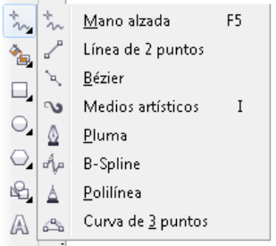
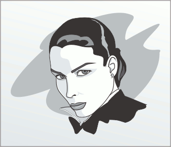

|
 |
 |
 |
 |
Introducción
A pesar de su aparente simplicidad, la línea es el objeto más difícil de dominar, pero como compensación, nos abrira un mundo de infinitas formas.
Hay varias herramientas para ello, estas se encuentran en el 4to botón de la caja de herramientas. Nos permitirán crear líneas rectas o curvas.
Veremos las Herramientas: "Mano alzada", "Polilínea", "Curva de tres puntos" y "Bézier".
